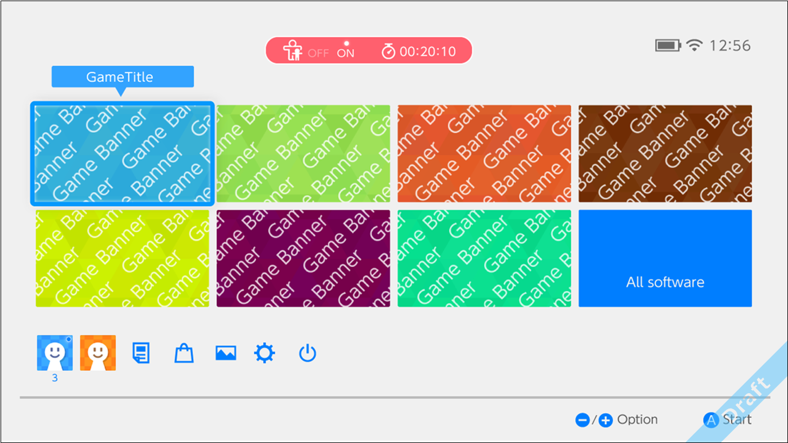
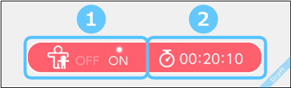
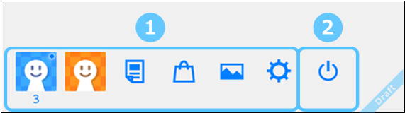
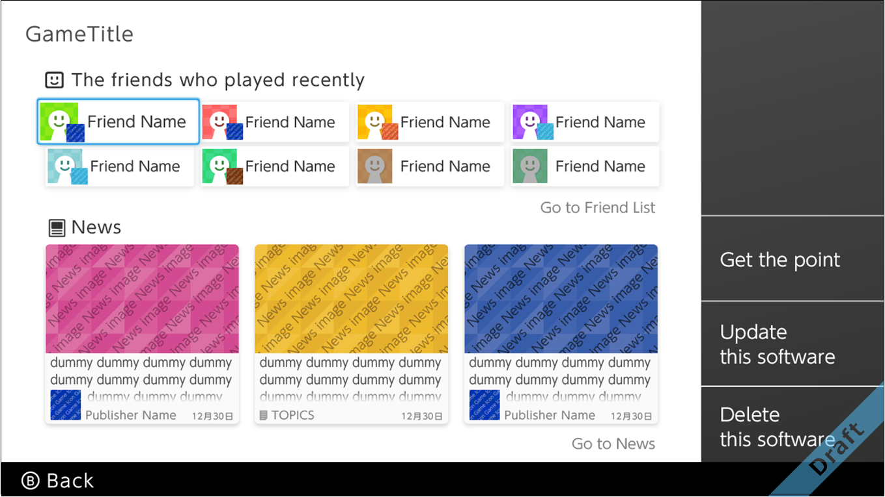

This menu can be opened at any time by pressing the HOME Button on the console.
Icons for the most recently played applications are presented in the middle of the screen. If you select the icon and press A (or tap it on the touch screen), the application will start.

This section introduces the icons situated at the top of the screen.

| Item | Description |
|---|---|
|
|
Shown when parental controls are set.
Use this icon to switch between the ON and OFF states. To switch from ON to OFF, you must enter the parental controls PIN. |
|
|
Shown for NX Protect (provisional name) when gameplay on the NX is allowed for only the specified hours on a particular day. For more information, see 5.5 Setting and Checking From Smart Device Apps. |
This section introduces the icons situated at the bottom of the screen.

| Item | Description |
|---|---|
|
|
The screen includes icons named My Page, News List, Nintendo eShop, Album, and Settings. For more information about each feature (My Page, News, Nintendo eShop, Album, and System Settings), see 5.2 System Application. |
|
|
Puts the system into sleep mode. Press the HOME Button to wake the system up. Sleep in the System Settings functions in the same way as Put System to Sleep in the Power Settings. |
There are plans to add a Controller icon. You can verify the connection status of the controllers and remaining battery, and can reconnect to controllers. The reconnect controller feature functions the same way as Reconnect controller in the controller settings in the System Settings.
Select an application icon and press the + Button or - Button display options.
The options will likely include various information about the application and an entrance to the application.

CONFIDENTIAL